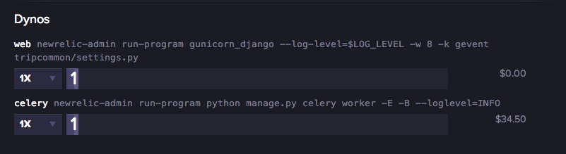

jedan stroj -- single point of failure
jeftino ($5)
bad neighbor effect
scaling?
ALI!
0 maintenance, hoster odrzava softver, brine se za security
nesto manje jeftino ($10-$20)
i dalje samo jedan stroj -- single point of failure
ALI!
puno pouzdanije i konzistentnije performance, "bad neighbor" effect primjetno manji problem
ALI!
najcesce "not managed" -- znaci root pristup i udri, radi sto hoces, i odgovaraj za sigurnost i stabilnost
zamisljeno za vece setupe
i decentralizirane aplikacije
visok "barrier to entry" -- potrebno je puno truda uloziti da bi se servirala najjednostavnija "Hello World" aplikacija
50$ navise (EC2)
naglasak na reusabilityju -- koncipirano kao lego kockice vise nego kao gotova rjesenja
kao rezultat, scaling hardvera je jednostavan i bezbolan
da bi to sve dobili, potrebno je dosta znanja koje je apsolutno neprimjenjivo igdje drugdje osim na toj platformi
striktno definirana radna okolina, "default" setup, cesto slican shared hostingu
razne razine konfigurabilnosti
35$ navise (Heroku)
naglasak na jednostavnosti scalinga kroz poticanje "ispravnih" pristupa
PaaS provider koji prodaje VPS-like containere ("dyno") i dodatke ("addons")
razni dodaci koje nude Heroku i vanjski partneri, a koji ne spadaju u model web servera ili workera
what's the big deal?
echo '' > index.php;touch composer.json;\
git init;git add .;git commit -m "new";\
heroku create;\
git push heroku master;\
heroku open30s do web sajta, s javnom web adresom
platforma je language-agnostic -- ako se kompajlira za linux, vrti se na Herokuu
sluzbeni support za Python, PHP, Ruby, Node.js...
nesluzbeni support za... svasta.
aplikacija definira vrste dynoa i naredbe kojima se pokrecu (Procfile)
preko dashboarda se kontrolira koliko kojih dynoa treba
mobilna aplikacija koja olaksava ljudima planiranje putovanja
backend: Django, postgres, redis, celery, rabbitmq
mobile app: phonegap (iOS/Android), native WIP
5 appova
web: gunicorn hitlist.wsgi:application --log-level=$LOG_LEVEL -w 8 -k gevent --max-requests=500 --preload
celery: python manage.py celery worker -E -B -Q celery --loglevel=INFO --maxtasksperchild=500
celeryslow: python manage.py celery worker -E -Q slow --loglevel=INFO --maxtasksperchild=500e
celerybacklog: python manage.py celery worker -E -Q backlog --loglevel=INFO --maxtasksperchild=500
addoni
ako vam se svidja ovo o cemu sam tu pricao
luka@hitlistapp.com